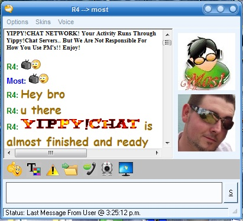

{kind=link}
Paypal Option

To Donate By Paypal Please Send Your Donation To...
Paypal: r4.productionz@hotmail.com ($Any Amount)


Yippy!Chat Forum Is Ready, Enter And Register Today!
Thanks For Visiting Us At Yippy!Chat, Its Totally Free To Download, Install And Enjoy!! Just Need To Register A Yippy!Chat Account To Login And Start Chatting!!
Features Skype Style Buddylist, Add/Deny Buddy, Private Messaging, Webcams, Screensharing, File Sending, Chatrooms With Voice And Radio And More!
We Have The Goal Of Providing The Ultimate Free Chat Experience, In A All New Yippy!Chat Way! That makes You Feel Excited Enough To Say Out Loud, Yippy!! Because Free Chat Is Back!!
You Can Expect To See More updates In Future To Further Improve This Software With Current Feature's Like..
Problem Getting Voice On? Download VOICEFIX.exe By Clicking Here! , And Run To Fix Any Voice Issues.
Also NOTE: After Installing Yippy!Chat, There is A Shortcut To The Run-Time Files, You Must Do The Run-Time Files After Install, To Be Sure The Program Will Be All Working!!
We Have All Used And Enjoyed The Infamous Yahoo Chat Rooms Before, And Miss Them So Much! So Thankfully.. Now With This Chat Client.. Chatrooms Are Back Everyone!
So What Are You Waiting For? Yes It Can Create A Free Account, Login And Join In To Chat Today, And Yes Its Safe, And Yes Its Clean! So Download And Enjoy Today!! By Dean aka R4.
Also NOTE: After Installing Yippy!Chat, There is A Shortcut To The Run-Time Files, You Must Do The Run-Time Files After Install, To Be Sure The Program Will Be All Working!!
Problem Getting Voice On? Download VOICEFIX.exe By Clicking Here! , And Run To Fix Any Voice Issues.
If You Have Any Problems To Get Voice Or Login Or Join Chat Still Then It Could Be From The Following Possibilities..
If You Do Have Any Other Problems Or Error's Then Please Help Us To Help You, And Report Them!!
If Your Reporting A Error/Bug Then Try To Screenshot Whats Happening, Aswell As Give Details..
And If Happened After You Just Click A Particular Button, Specify Which Exact Button, Thanks!!
Got Idea's You Want To Share! Register And Join The YippyChat Forum And Post YOur Request For What You Want To See!
YippyChat will No Longer allow 3rd Party Room Hosting For Rooms, After All The Complaints About This Featuring
If You Wish To COntact Us, I Preffer You Do So Via The Forum, Otherwise If YOu Must, Email Me! See COntact Us For More!
If You Have A Mac PC, Not Windows PC, Then Im Sorry But YippyChat Is Not Supporting Mac Operating Systems!
If Prompted To Add YippyChat To Firewall Allow List, When Connecting To Voice On Room Joined, Allow It! Or Voice Wont Work!
To Donate By Paypal Please Send Your Donation To...
Paypal: r4.productionz@hotmail.com ($Any Amount)
* Yippy!Chat * Terms Of Service
Your use of the service is subject to Terms and Conditions.
1. Use of Service
The service is not intended for use by individuals under the age of 18. If you are a under the age of 18, you will only be allowed to join and use yippychat under legal gaurdian supervision & permission, you must be 18 years or older to create an account on our services. people under the age of 18 can use the service only with the agreement of, and under the supervision of, a parent or guardian. You are responsible and liable for all your activities while using the service. The use of the service is entirely at your own risk. Your activities on the service are not private; do not transmit anything that you would not want the world to be able to see.
The service may not be used to transmit material, links or references to material which:
is unlawful, hateful, offensive, vulgar, abusive, defamatory, obscene or sexually explicit, promotes self harm
is intended to harass, stalk, intimidate, threaten, victimize, deceive, degrade, embarrass, cause distress or discomfort
contains direct threats of violence or depicts violence gratuitously
promotes any dangerous or illegal activity
contains or solicits personal information
infringes anyone else's intellectual property rights
violates proprietary rights of any person
impersonates or represents another person
is otherwise deemed inappropriate by Yippy!Chat
Yippy!Chat does not promote groups or users that are based on religious or political views
2. Restrictions
You will not disrupt the operation of the service
You will not act in a manner that negatively affect other users enjoyment of the service
You will not harvest or collect material or user information from the service
You will not attempt to access or access any account that is not yours
You will not use automated means to perform interactions with yippychat.com's systems without permission from yippychat.com, except public search engines
You will not modify, adapt, translate, or reverse engineer any portion of the service
You will not resell the service without permission from yippychat.com
You will not post unauthorized commercial content (eg spam or advertising)
You will not use the service in any manner deemed inappropriate by yippychat.com
You will not add any kind of redirect
You will not participate in phishing or scamming schemes
You will not use the service if you are a convicted sex offender
You will not use the service if you are banned from using such services by law
3. yippychat.com
makes no guarantees concerning the service
makes no guarantees that the service does not contain material that could be offensive to some
may at anytime verify as needed any users identity on the service
makes no guarantees to the proper use of material on the service by any party
may pass any material to appropriate authorities
reserves the right, and has all obligation, to monitor or moderate the service
reserves the right to terminate your use of the service and remove material stored on the service at any time, for any reason
reserves the right to delete or refuse to distribute any content, or any group and to terminate or reclaim users, user names without reason.
reserves the right to amend or change the Terms and Conditions at any time without notice
4. Accounts
You are responsible for the security and proper use of all your accounts and passwords used in connection with the service and must take all necessary steps to ensure they are kept confidential, secure, used properly and not disclosed to unauthorised people.
You must use your Yippy!Chat accounts on a regular basis in order to keep them active. yippychat.com may, without notification, cancel your accounts which have not been used for a period of ninety (90) days.
5. Individuals
Individuals are responsible for the material they post to the chat room.
Inactive or inappropriately Individuals will be passed on to other moderators in response to admin notice or will be deleted.
You are responsible for the security and proper use of all accounts and passwords used in connection with the service and must take all necessary steps to ensure they are kept confidential, secure, used properly and not disclosed to unauthorised people.
You must use your accounts on a regular basis in order to keep your them active. yippychat.com may, without notification, cancel your accounts which have not been used for a period of ninety (90) days.
6. yippychat.com Paid for Premium Services
yippychat.com may offer certain premium services that are subject to charges
all premium services purchased from yippychat.com or R4 can only be used in the yippychat.com network and within the terms and conditions of yippychat.com
yippychat.com retains the right to withdraw premium services
when premium services are purchased from yippychat.com or R4 by the user, the amount of purchases is due immediately. The user will not have a right to cancel the order after the order has been placed
If a user is banned from the yippychat.com for contraventions of yippychat.com terms and conditions they will lose the right to a refund of yippychats services. In some circumstances a user may be refunded as the Dicretion of yippychat or R4. The costs incurred by yippychat.com or R4 in providing this refund will be deducted from the outstanding amount in question. If the costs exceed the amount no refund will be made.
yippychat may include fictional currencies , which may be purchased with real world currency and can then be exchanged on yippychat.com for limited right(s) to use a feature our product when, as, and if allowed by yippychat.com or R4 and subject to the terms of service. Regardless of terminology used, yippychat.com Credits may be redeemable for any sum of real world money or monetary value from yippychat.com at any time. You agree that yippychat.com has the absolute right to manage, regulate, control, modify and/or eliminate such Credits as it sees fit in its sole discretion, in any general or specific case, and that yippychat.com will have no liability to you based on its exercise of such rights. yippychat.com Credits may be used for any kind of wagering, but not betting or gambling either within or outside of our Site.
yippychat.com does not assume any responsibility associated with your transactions with yippychat.com or any such third parties. yippychat.com is the sole owner of Credits, and as such, retains all intellectual property rights affiliated with ownership. You acknowledge that at no time do you own, nor have any right to, the intellectual property affiliated with Credits or yippychst.com and our services. You are hereby prohibited from reselling or distributing Credits without the expressed written consent of yippychat.com.
Under this Terms of Service agreement you must first contact yippychat.com to attempt to resolve any disputes before contacting your bank or credit card company to dispute the charges, or law inforcement to dispute any issue related to our services. You further agree that any billing disputes must be submitted in writing (scanned and emailed) to our contact department within one month of the payment in question. By using our services You agree to the above policy and to contact yippychat.com before contacting your financial institution to seek a resolution. In the event you dispute charges contrary to this agreement, we reserve the right to add a $150 collection chargeback fee per transaction and to refer your account or sell your debt to a third party collection agency. We also reserve the right to take further legal action against you.
7. Tortuous Conduct
You are expected to request and respond to support and other issues in a courteous manner, when emailing, calling, submitting online tickets or using live chat with a representative of yippychat.com. Any cursing, yelling, or further intentional disruptive behavior aimed at yippychat.com or its employees shall be considered a violation of this Terms of Service agreement. Any threat; whether orally, verbally, in written, via E-mail, via live chat, delivered by second parties or delivered in any other way, and directed towards yippychat.com or any of yippychat.com's employees, partners, staff, contractors, sub-contractors, facilities, offices, etc. shall be construed as a violation of this Terms of Service agreement.
8. Disputes
yippychat.com does not resolve disputes between users and does not guarantee that users will comply with our terms and conditions or otherwise behave appropriately. If you are the victim of offensive or inappropriate behavior or receive any other unwanted communications, you should use the built-in facilities to block the messages as well as seeking appropriate external help, for example from law enforcement authorities. If you continue to suffer problems, or are not satisfied, then you must stop using the service. You may report people who you believe to be breaking the terms of service to www.yippychat.com but you should not expect their account to be deleted as a result of your report, yippychat may take action against them including suspending or locking accounts with no further communication with you.
It is your sole responsibility to ensure that you are not scammed or phished while using the service. yippychat.com is unable to resolve scamming or phishing disputes between users, this includes but it not limited to reversing trades, if did not turn out as you expected. You may report scammers and phishing sites to www.yippychat.com, yippychat may take action against them including suspending or locking accounts with no further communication with you.
YOU ARE SOLELY RESPONSIBLE FOR ANY DISPUTES BETWEEN YOU AND OTHER yippychat USERS INCLUDING WITHOUT LIMITATION, DISPUTES CONCERNING TRANSACTIONS WITH OTHER MEMBERS. yippychat.com RESERVES THE RIGHT, BUT HAS NO OBLIGATION TO MONITOR OR RESOLVE DISPUTES BETWEEN mychat USERS. YOU WILL NOT HOLD yippychat.com RESPONSIBLE FOR OTHER USERS' CONTENT, ACTIONS OR INACTIONS. IF YOU HAVE A DISPUTE WITH ONE OR MORE yippychat USERS, YOU RELEASE yippychat.com, ITS AFFILIATES, AND THEIR OFFICERS, EMPLOYEES, AGENTS, PARTNERS AND LICENSORS FROM CLAIMS, DEMANDS AND DAMAGES (ACTUAL AND CONSEQUENTIAL) OF EVERY KIND AND NATURE, KNOWN AND UNKNOWN, ARISING OUT OF OR IN ANY WAY CONNECTED WITH SUCH DISPUTES.
9. Copyright Infringement
To file a notice of infringement, you must provide a written communication (by email).
DISCLAIMERS OF WARRANTIES
THE SERVICE AND THE MATERIALS ARE PROVIDED "AS IS"; AND "AS AVAILABLE", AND WITHOUT WARRANTY BY yippychat.com, AND, TO THE MAXIMUM EXTENT ALLOWED BY APPLICABLE LAW, yippychat.com EXPRESSLY DISCLAIM ALL WARRANTIES, EXPRESS AND IMPLIED, INCLUDING, BUT NOT LIMITED TO, THE IMPLIED WARRANTIES OF MERCHANTABILITY AND FITNESS FOR A PARTICULAR PURPOSE AND ANY WARRANTY OF NONINFRINGEMENT. THERE IS NO WARRANTY THAT THE SERVICE OR THE MATERIALS WILL MEET YOUR REQUIREMENTS, OR THAT YOUR ACCESS TO THE SAME WILL BE UNINTERRUPTED OR ERROR-FREE. yippychat.com DO NOT WARRANT, GUARANTEE, OR MAKE ANY REPRESENTATIONS REGARDING THE USE OR THE RESULTS OF THE USE OF THE SERVICE OR THE MATERIALS WITH RESPECT TO PERFORMANCE, ACCURACY, RELIABILITY, SECURITY CAPABILITY, CURRENTNESS OR OTHERWISE. YOU WILL NOT HOLD yippychat.com RESPONSIBLE FOR ANY DAMAGES THAT RESULT FROM YOU ACCESSING THE SERVICE OR USING THE SERVICE AND/OR THE MATERIALS. NO ORAL OR WRITTEN INFORMATION OR ADVICE GIVEN BY ANY PERSON SHALL
CREATE A WARRANTY IN ANY WAY WHATSOEVER RELATING TO yippychat.COM.
UNDER NO CIRCUMSTANCES SHALL yippychat.com BE LIABLE FOR ANY UNAUTHORIZED USE OF THE SERVICE AND/OR THE MATERIALS.
LIMITATION OF LIABILITY
TO THE FULLEST EXTENT PERMISSIBLE PURSUANT TO APPLICABLE LAW, UNDER NO CIRCUMSTANCES SHALL yippychat.com BE LIABLE TO YOU FOR ANY CONSEQUENTIAL, INCIDENTAL, INDIRECT, SPECIAL OR SIMILAR DAMAGES (INCLUDING, WITHOUT LIMITATION, DAMAGES FOR LOSS OF BUSINESS PROFITS, BUSINESS INTERRUPTION, LOSS OF BUSINESS INFORMATION, AND THE LIKE) ARISING OUT OF THE USE OR INABILITY TO USE THE SERVICE AND/OR THE MATERIALS, EVEN IF yippychat.com, HAVE BEEN ADVISED OF THE POSSIBILITY OF SUCH DAMAGES. BECAUSE SOME JURISDICTIONS DO NOT ALLOW THE EXCLUSION OR LIMITATION OF LIABILITY FOR CONSEQUENTIAL OR INCIDENTAL DAMAGES, THE ABOVE LIMITATION MAY NOT APPLY TO YOU. TO THE EXTENT THAT IN A PARTICULAR CIRCUMSTANCE ANY DISCLAIMER OR LIMITATION ON DAMAGES OR LIABILITY SET FORTH HEREIN IS PROHIBITED BY APPLICABLE LAW, THEN, INSTEAD OF THE PROVISIONS HEREOF IN SUCH PARTICULAR CIRCUMSTANCE, yippychat, SHALL BE ENTITLED TO THE MAXIMUM DISCLAIMERS AND/OR LIMITATIONS ON DAMAGES AND LIABILITY AVAILABLE AT LAW OR IN EQUITY
BY SUCH APPLICABLE LAW IN SUCH PARTICULAR CIRCUMSTANCE, AND IN NO EVENT SHALL SUCH DAMAGES OR LIABILITY EXCEED THE AMOUNT PAID BY YOU FOR THE SERVICE.
OWNERSHIP
NOT WITH STANDING ANYTHING TO THE CONTRARY HEREIN AND REGARDLESS OF TERMINOLOGY USED, YOU ACKNOWLEDGE AND AGREE THAT YOU SHALL HAVE NO OWNERSHIP OR OTHER PROPERTY INTEREST IN THE SERVICES OR ACCOUNTS, AND YOU FURTHER ACKNOWLEDGE AND AGREE THAT ALL RIGHTS IN AND TO THE GROUPS OR ACCOUNTS ARE AND SHALL FOREVER BE OWNED BY AND INURE TO THE BENEFIT OF yippychat.com.
GOVERNING LAW
These Terms shall be governed in accordance with the laws of New Zealand and all disputes shall be decided in the courts of New Zealand.
If any provision of this Agreement shall be unlawful, void, or for any reason unenforceable, then that provision shall be deemed severable from this Agreement and shall not affect the validity and enforceability of any remaining provisions, we agree that the court should endeavor to give effect to the parties' intentions as reflected in the provision. If we fail to enforce any provision of these terms of service, that failure will not preclude us from enforcing either that provision (or any similar provision) on a later occasion. This Terms of Service is the complete and exclusive statement of the agreement between you and yippychat concerning the Service, and this Agreement supersedes any prior or contemporaneous agreement, either oral or written, and any other communications with regard thereto between you and yippychat. No agency, partnership, joint venture, employee-employer or franchiser-franchisee relationship is intended or created by this Agreement. Except for clauses excluding or
restricting our liability a person who is not a party to this agreement shall have no rights under the Contracts (Rights of Third Parties) Act 1999 to enforce any term of this agreement.
**************
* Yippy!Chat *
**************